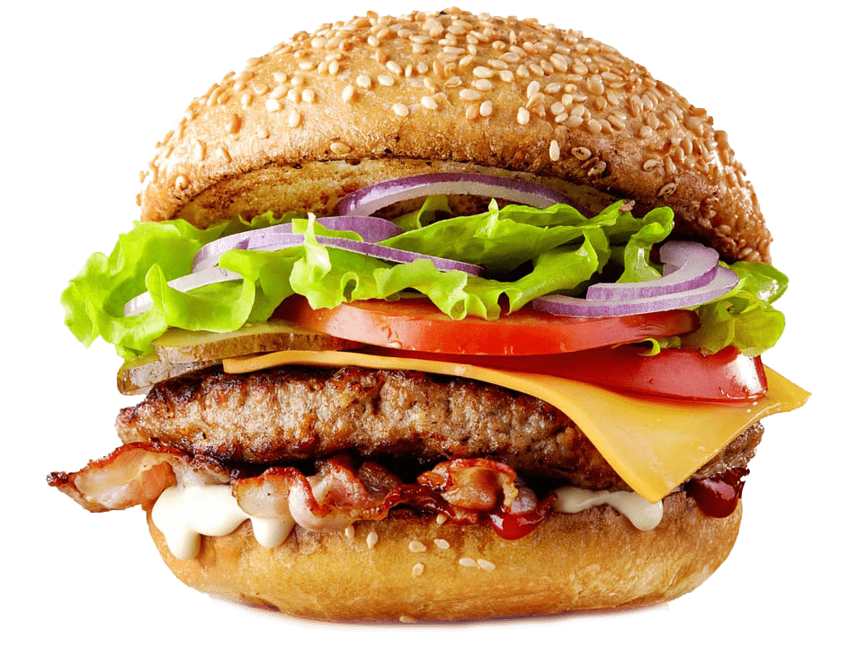

Dicci la data, il numero di persone e il CAP.
Ricevi un preventivo fisso entro un giorno lavorativo.

Lunch box, catering o un pop-up: mandaci la data, il numero di persone e il CAP e ricevi un preventivo fisso entro un giorno lavorativo.
WhatsApp +49 155 65933378 info@migamiga.de